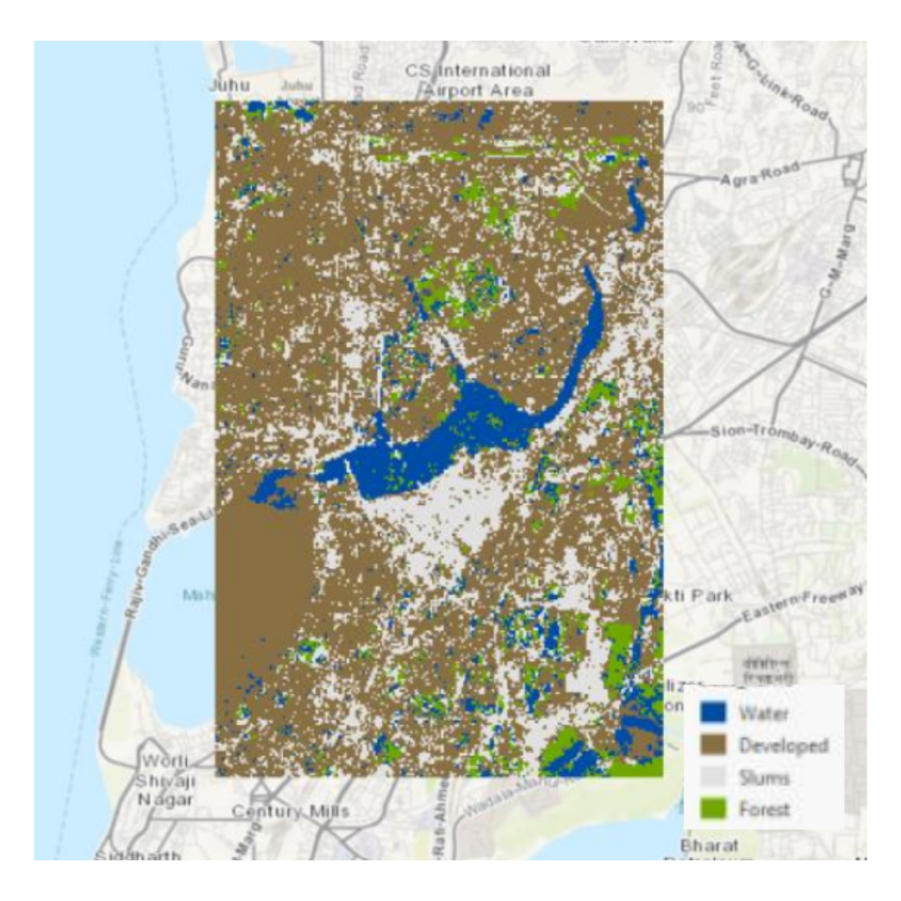
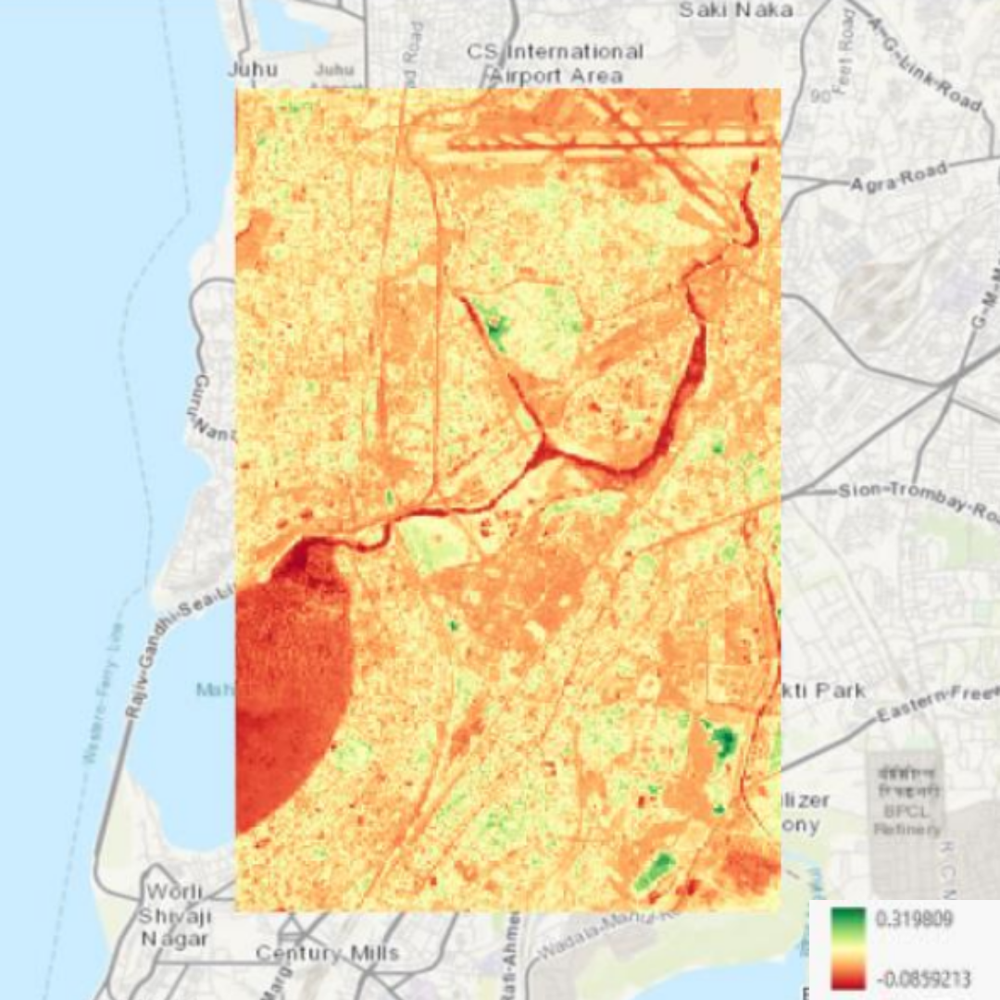

Land Cover Classification Maps
Description of map
The aim of creating the land cover classification map for Mumbai's suburbs was to accurately depict and categorize the various types of land cover in this urban area. This map serves practical purposes such as urban planning, environmental monitoring, and resource management by providing insights into the distribution of built-up areas, vegetation, water bodies, and other land uses. It helps in understanding urban dynamics, supporting decisions related to sustainable development, infrastructure planning, and environmental conservation efforts in the suburban region of Mumbai.
How was it made?
I began by completing an Esri course on Supervised Pixel Based Image Classification to gain foundational knowledge. Following this, I downloaded Sentinel 2 satellite imagery of Science Park Utrecht from either Google Earth Engine or directly from ESA.
Using ArcGIS Pro, I created a project named "LCClassification" and imported the satellite imagery. I adjusted the band combinations to create both false color and true color composites to enhance visual interpretation. Next, I utilized tools within ArcGIS Pro to analyze the spatial resolution of the imagery and to examine spectral profiles of different land cover types. For classification tasks, I employed various methods including Unsupervised and Supervised Pixel Based Classification using the Classification Wizard.
Supervised Pixel Based Classification
This involves using training data to recognize different land cover types based on a set of known samples. Each pixel is then classified based on its similarity to the training samples. As the training data is more accurate than unsupervised classification, supervised pixel based classification generally produces more accurate and interpretable results. It does depend on accurate and extensive training data, however. It makes sense that this map corresponds to what I know about the land cover in Mumbai, as the training data is representative of my own knowledge, and hence the map is also representative of that.
Normalized Difference Vegetation Index
Additionally, I computed the Normalized Difference Vegetation Index (NDVI) to assess vegetation health, applying appropriate bands and symbology to visualize the data effectively.
Skills Acquired
Firstly, I gained proficiency in handling satellite imagery and geospatial data within ArcGIS Pro, including importing, visualizing, and analyzing raster data. I developed expertise in applying classification techniques such as supervised and unsupervised classification, which involved interpreting spectral profiles and adjusting classification parameters for accurate mapping. Additionally, I enhanced my ability to use geoprocessing tools for tasks like spatial analysis and raster function calculations, particularly evident in tasks such as calculating NDVI for vegetation analysis.